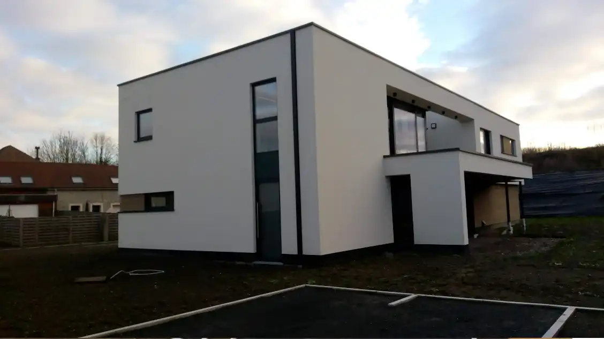
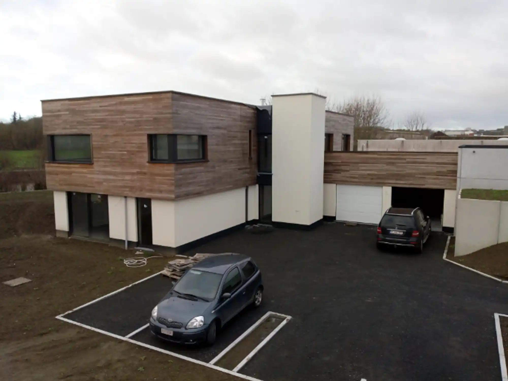
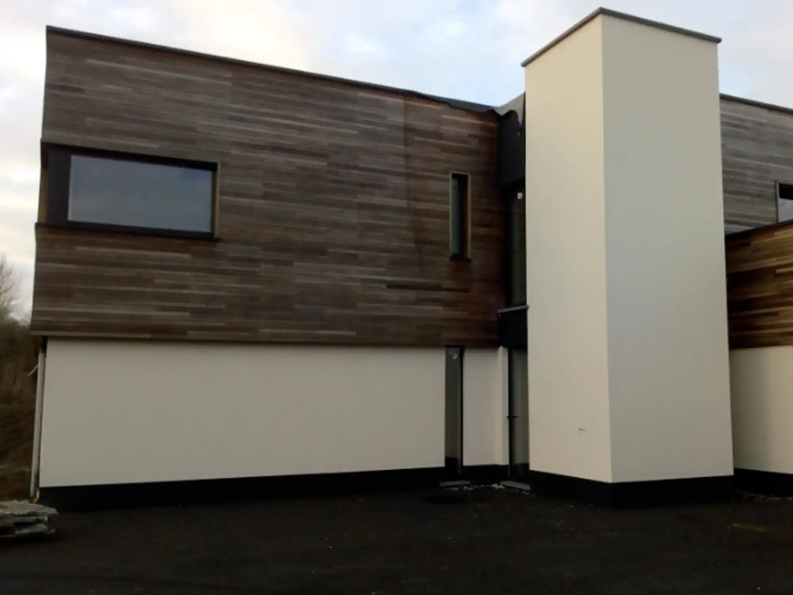
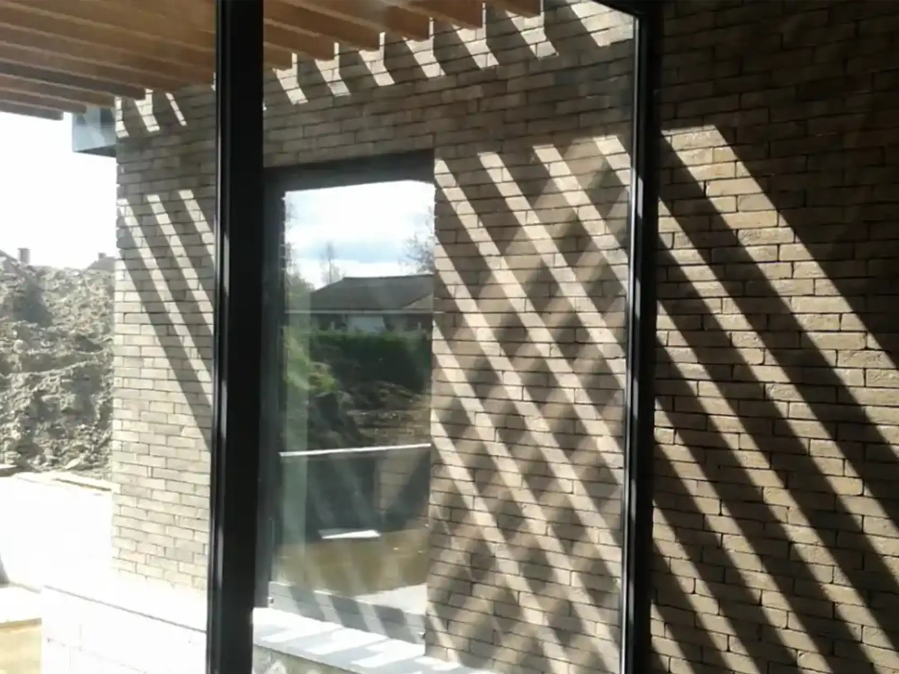
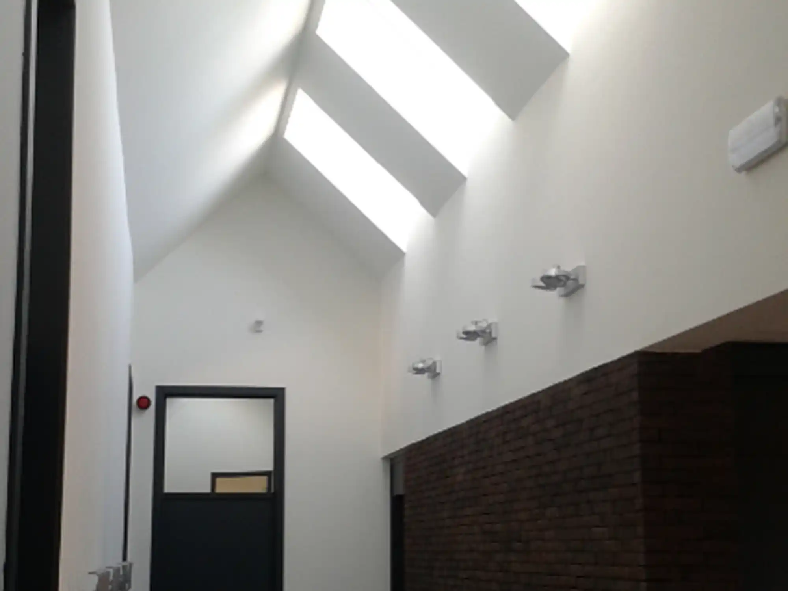
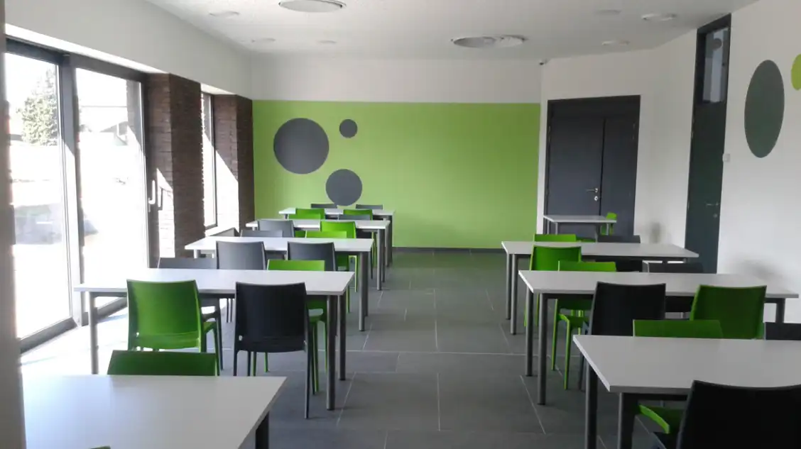
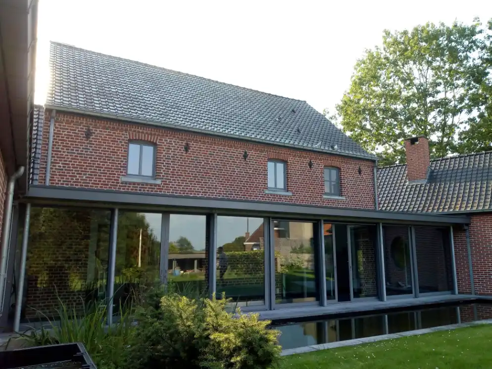
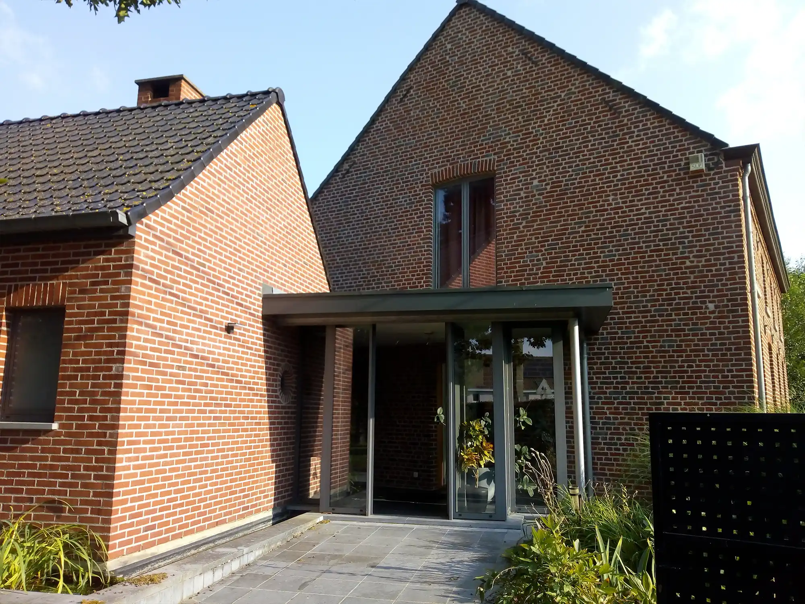
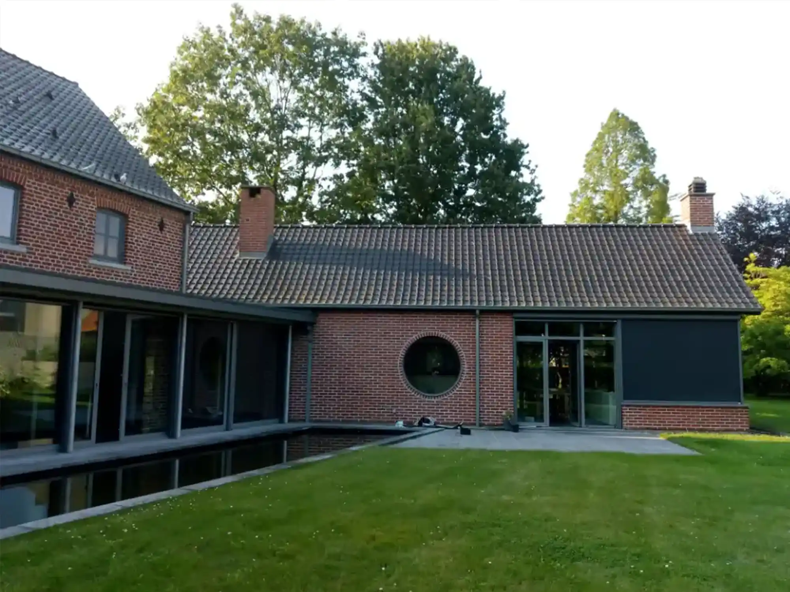

Projets
— Habitations

Deux réalisations à toit plat. Les prescriptions urbanistiques sur le site d'implantation de ces 2 habitations permettaient de réaliser ces volumétries.


— Bâtiment de restauration


Réalisation d'une cuisine professionnelle et de plusieurs réfectoires. Cette construction est réalisée dans un institut accueillant des personnes déficientes mentalement et physiquement ; pour cette raison, le bâtiment de 600m2 est de plain-pied et la taille des différents réfectoires adaptés au personnel accompagnant les résidents. Deux réfectoires pour 6 personnes, un pour 12, un pour 24 et enfin un pour 50.

— Extension d'une habitation

Ancienne maison typiquement villageoise, conservant ses trois fenêtres à l'étage, agrandie par deux ailes latérales de plain-pied. Une extension centrale entièrement vitrée relie les différents volumes et ouvre largement les espaces sur le jardin. L'une des ailes accueille un grand living avec cuisine ouverte, tandis que l'autre abrite un double garage et un atelier professionnel. Un plan d'eau au pied de l'extension renforce le caractère contemporain de la transformation.

